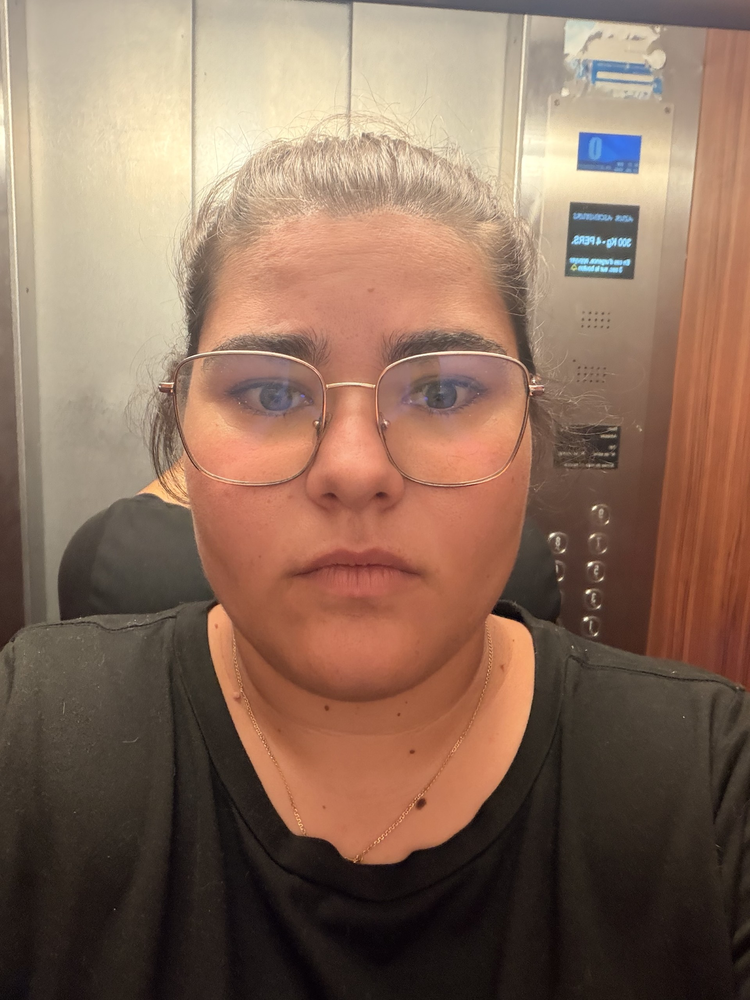

Diplôme d'Etat Infirmier
IFSi de Gap

En reconversion professionnelle vers le developpement web et web mobile, je souhaite mettre à profit mon sérieux, mon sens de l'organisation et ma capacité d'adaptation pour concevoir des sites et des applications web.
Curieuse et motivée, j'aime apprendre, relever de nouveaux défis et développer mes compétences techniques afin de construire des projets utiles et accessible.
IFSi de Gap
IFSI de gap
Lycée Bonaparte Toulon
CHICAS de Gap
CHICAS de Gap
CHICAS de Gap
Clinique St jean Toulon
clinique St jean Toulon
A mon compte